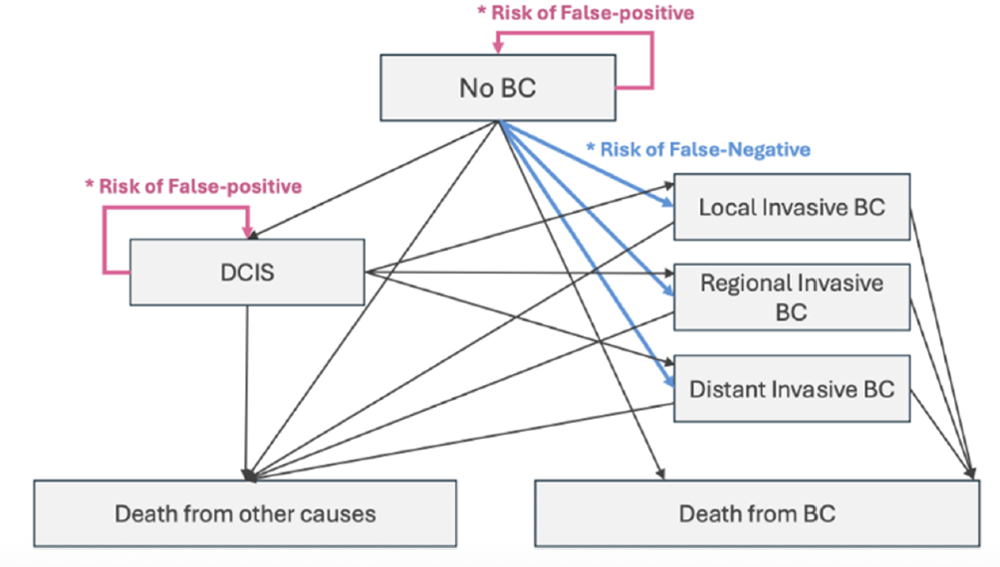
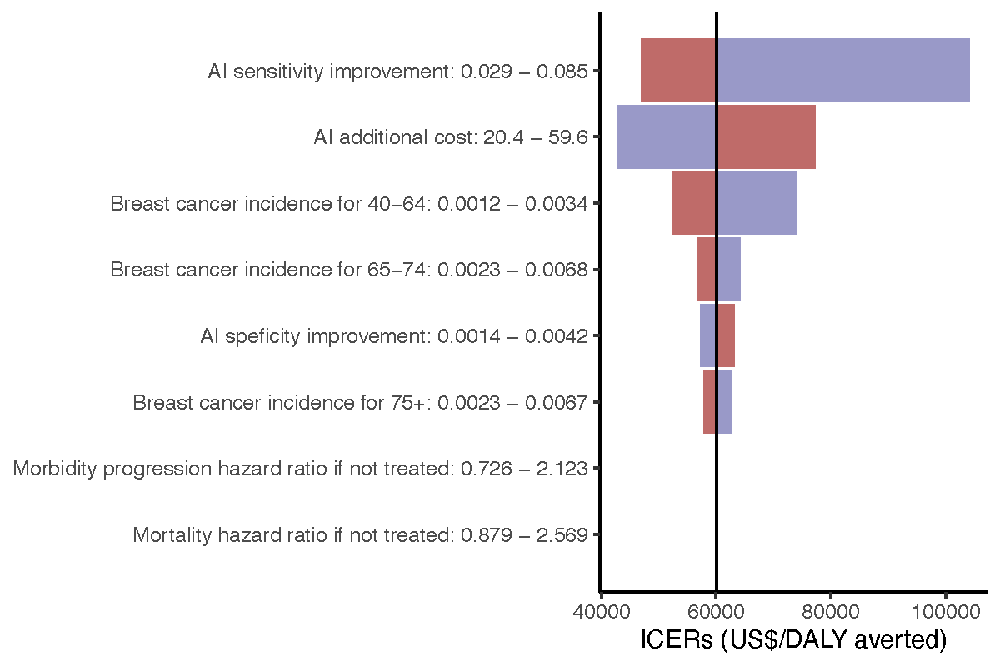
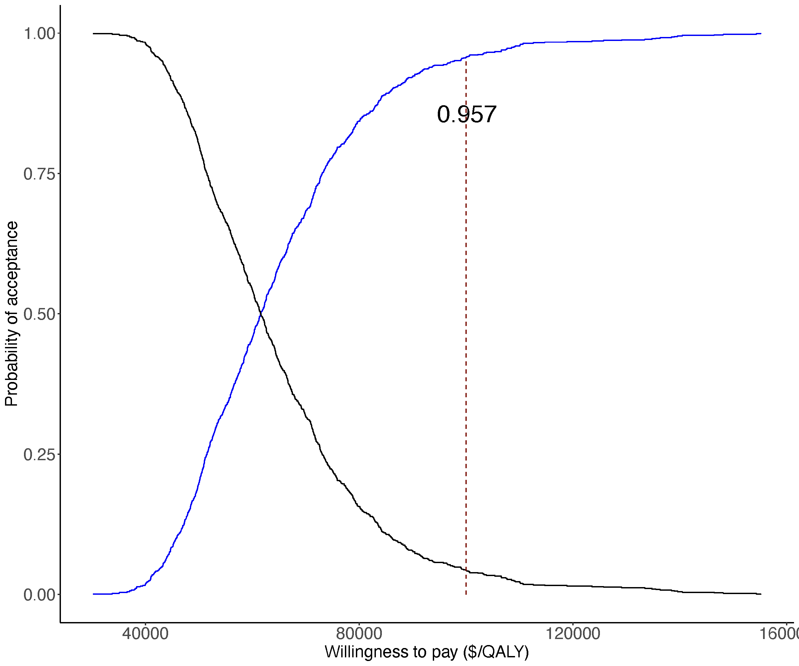

| Key parameters | Value | Source |
|---|---|---|
| Population size | 1000000 | Assumption |
| Sensitivity without AI | 0.874 | Andersen et al |
| Sensitivity with AI | 0.931 | Andersen et al |
| Specificity without AI | 0.922 | Andersen et al |
| Specificity with AI | 0.925 | Andersen et al |
| Incidence of breast cancer | Various by age | SEER |
| Percentage of stage 0 progress to stage 1-2 | 0.05 | Shi et al |
| Percentage of stage 1-2 progress to stage 3 | 0.08 | Shi et al |
| Percentage of stage 3 progress to stage 4 | 0.21 | Shi et al |
| Death rate from breast cancer | Various by stage | SEER |
| Natural death rate | Various by age | US census |
| Hazard ratio related to breast cancer progression if not treated | 1.42 | EBCCG |
| Hazard ratio related to mortality due to breast cancer if not treated | 1.72 | Caswell-Jin et al |
| Note: | ||
| EBCCG denotes Early Breast Cancer Collaborative Group; SEER denotes Surveillance, Epidemiology, and End Results Program. |
Cost-effectiveness of AI-assisted breast cancer screening: Preliminary findings from a modelling study in the United States
Wu Zeng, MD, PHD
Georgetown University
Presented at
湘雅公共卫生论坛暨CHPAMS 2026年会
Introduction
- Breast cancer is the most common cancer amogn women worldwide and a leading cause of cancer-related deaths.
- Early detection through screening can significantly reduce mortality.
- Traditional screening methods like mammography have limitations in sensitivity and specificity.
- AI has been widely used in breast cancer screening, but its cost-effectiveness is not well understood.

Objectives
To evaluate the cost-effectiveness of AI-assisted breast cancer screening compared to traditional mammography screening from a healthcare system perspective.
Methods
Two screening strategies were compared:
- Traditional mammography screening every 2 years (Status quo).
- AI-assisted mammography screening every 2 years (Intervention).
Target population
- 1 million women aged at 40 years old undergoing routine breast cancer screening.
Perspective
- Healthcare system perspective
Time horizon and discounting
- Lifetime horizon to capture all relevant costs and health outcomes.
- Costs and health outcomes were discounted at an annual rate of 3% to reflect the time value of money and health benefits.
Framework and model structure

Key modelling parameters and assumptions and data sources
- Intervention: AI-assisted mammography screening every 2 years.
- Comparator: Traditional mammography screening every 2 years.
- Key parameters:
- Sensitivity improvement with AI: 5.7%, increased from 87.4% to 93.1% based on a recent study
- Specificity improvement with AI: 0.3%, increased from 92.2% to 92.5%
- Additional costs of screening with AI: $40 per screening
- Health utilities
- Cost of deaths
- Sensitivity improvement with AI: 5.7%, increased from 87.4% to 93.1% based on a recent study
- Data sources: Published literature, national databases (SEER), and assumptions.
Key parameters
Key parameters (Continue…)
| Key parameters | Value | Source |
|---|---|---|
| cost of treatment at stage 0 ($) | 0.00 | SEER |
| cost of treatment at stage 1-2 ($) | 1721.83 | SEER |
| cost of treatment at stage 3 ($) | 5613.50 | SEER |
| cost of treatment at stage 4 ($) | 17486.17 | SEER |
| cost of natural death ($) | 19982.20 | SEER |
| cost of cancer death ($) | 108204.97 | SEER |
| utility of healthy people | 0.83 | Andersen et al |
| utility of stage 0 | 0.71 | Andersen et al |
| utility of stage 1-2 | 0.67 | Andersen et al |
| utility of stage 3 | 0.56 | Andersen et al |
| utility of stage 4 | 0.45 | Andersen et al |
| Discount rate | 0.03 | Assumption |
Sensitivity analyses
- One-way sensitivity analyses
- Sensitivity
- Specificity
- Costs of screening
- Treatment costs, ect.
- Probabilistic sensitivity analyses (PSA) using Monte Carlo simulations to account for uncertainty in all the major parameters simultaneously and estimate 95% confidence intervals for the cost-effectiveness results.
Results (40 years to 100 years for 1 million population)
Cost per woman under the two scenarios
| Cost component | AI assisted Screening | Tranditional screening | Difference | Share |
|---|---|---|---|---|
| Cost of screening and confirmative tests | 5294.22 | 4824.12 | 470.10 | 60.31% |
| Breast cancer treatment cost | 8282.87 | 7973.29 | 309.58 | 39.72% |
| Cost associated with death | 5.60 | 5.81 | -0.21 | -0.03% |
| Total | 13582.70 | 12803.23 | 779.47 | 100% |
The incremental cost difference is $779.5 95% confidence intervals for the cost difference is between $537.8 and $1,116.8
Effectiveness
QALYs per women under the two scenarios
| Effectiveness | AI assisted Screening | Tranditional screening | Difference | 95% CI of difference |
|---|---|---|---|---|
| QALYs | 19.309 | 19.2966 | 0.0124 | 0.0006 - 0.0222 |
Cost-effectiveness results (ICER)
\[ICER = \frac{779.47}{0.01244} = 62,663\]
The 95% confidence intervals for the ICER is between $40,891 and $108,458.
Using a cost-effectiveness threshold of $100,000 per QALY gained, AI-assisted breast cancer screening is considered cost-effective compared to traditional mammography screening.
Sensitivity analyses results
One-way sensitivity analyses

Probabilistic sensitivity analyses (PSA)

Discussion
- AI-assisted breast cancer screening is cost-effective compared to traditional screening methods without AI.
- The results are consistent with prior two CEA studies with a higher ICER
- Howver, it was reported that AI-assisted screening was not a cost-effective strategy, where the cost of death was assumed to be $0.
- The results are robust across various sensitivity analyses.
- The results are most sensitive to the sensitivity improvement with AI, costs of screening, and incidence of breast cancer.
- Limitations include assumptions in the model and generalizability to different populations.
Questions and Comments
Contact information: wz192@georgetown.edu
Georgetown University | Wu Zeng